Retomada das chuvas, persistência da seca hidrológica
As precipitações recentes apontam recuperação pluviométrica heterogênea, mas o TSI-12 ainda caracteriza seca hidrológica severa em Ladário e Porto Murtinho. A recuperação de cotas é espacialmente distinta. O ONS projeta redução do volume útil de Manso de 71,9% para 65,4% até 30/11 no cenário de defluência constante de 95 m³/s. A gestão deve conciliar segurança hídrica, regularização, navegação, ambiente e usos múltiplos.
A análise e as 18 figuras selecionadas da NT final são apresentadas abaixo, por instituição. As legendas explicativas e os recursos de navegação pertencem a esta edição web. O DOCX final anteriormente entregue permanece inalterado.
INMET/INPE — diagnóstico meteorológico e previsões
A distribuição espacial das chuvas de julho a setembro e no acumulado parcial de outubro evidencia heterogeneidade na bacia. A recuperação pluviométrica não deve ser interpretada como recuperação simultânea das cotas fluviais.
As previsões de curto prazo (22–24/10), a projeção subsazonal BAM/INPE e o prognóstico sazonal novembro–janeiro devem ser interpretados em escalas temporais distintas. A climatologia destacada no material aponta 500–900 mm de precipitação e temperatura média de 24–28 °C no trimestre.
Implicação para a SOE: monitorar sobretudo a distribuição espacial e a persistência da chuva nas áreas de contribuição de cabeceira, evitando transformar probabilidades sazonais em volumes afluentes determinísticos.
Evidências gráficas da instituição

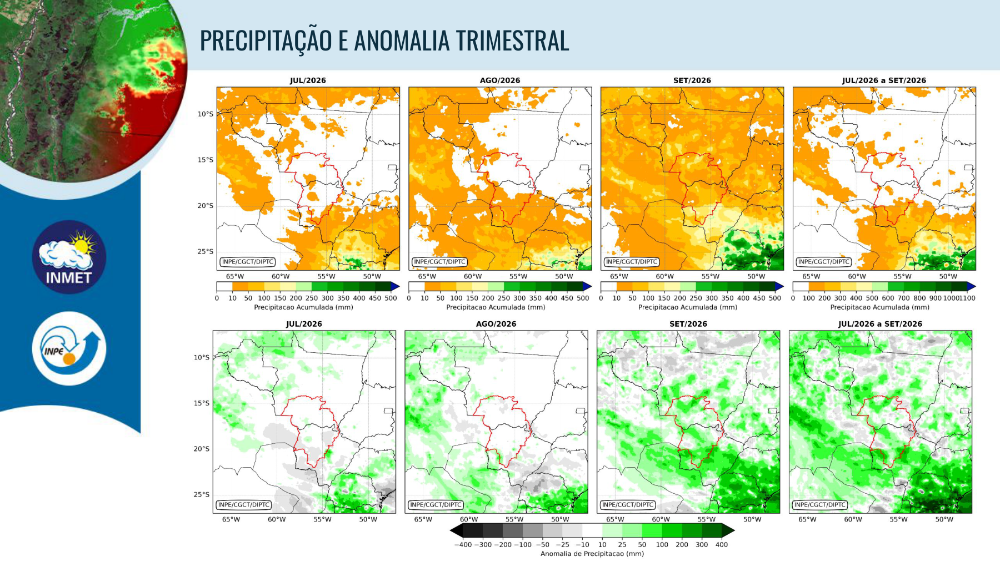

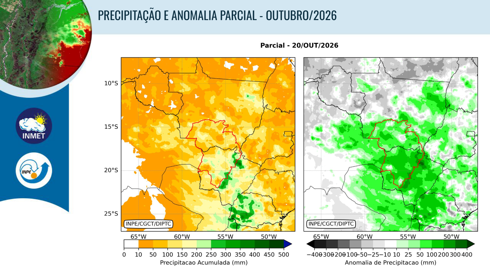

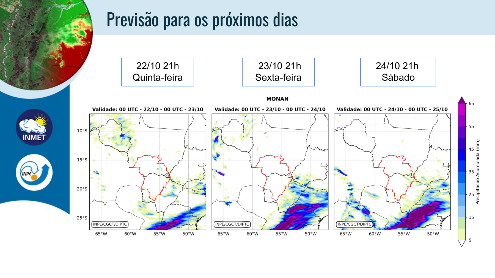

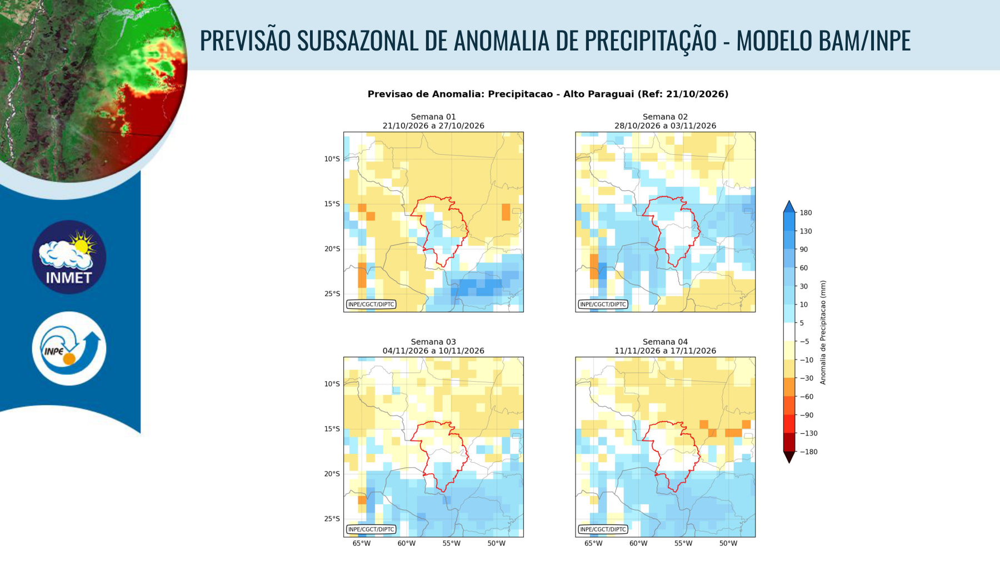

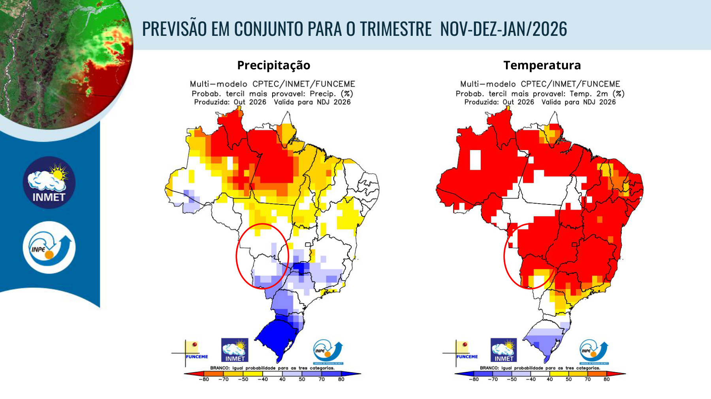
CEMADEN — seca hidrológica, impactos e prognósticos
A precipitação de outubro é indicada como 165% da média de longo termo no gráfico de monitoramento, mas os indicadores hidrológicos ainda registram seca. A diferença reflete memória hidrológica e defasagem da resposta dos cursos d’água.
Em 21/10, Ladário registra 123 cm, ante 117 cm em 30/09; Porto Murtinho, 320 cm, ante 238 cm. No TSI-12 parcial de outubro, ambos apresentam -1,59 (seca severa); no TSI-6, Ladário -1,31 (severa) e Porto Murtinho -1,25 (moderada). São indicadores de severidade, não equivalentes diretamente aos percentis de cotas.
Os produtos de previsão GEFS, ECMWF e GloFAS fornecem cenários probabilísticos de chuva, cotas e vazões. Atenção a impactos sobre navegação, ecossistemas, comunidades e usos múltiplos; o material não estabelece, por si, decisões operacionais.
Evidências gráficas da instituição

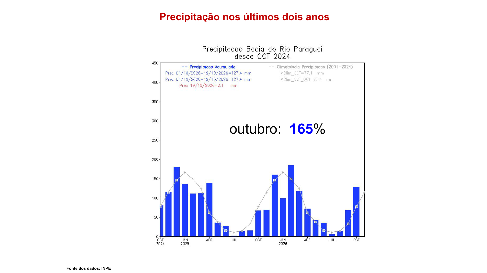

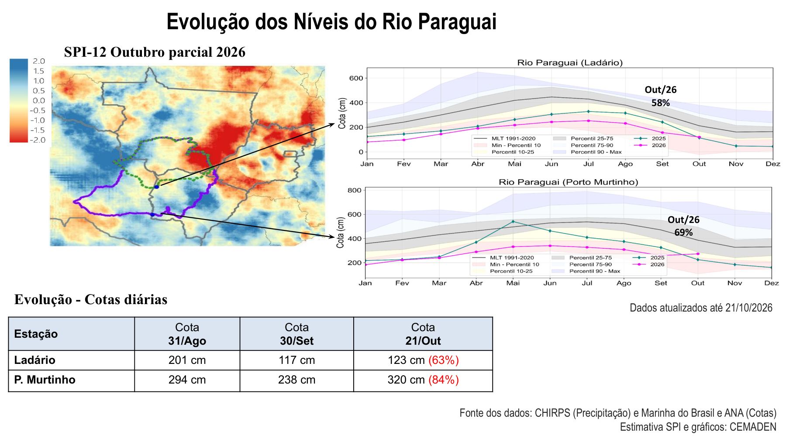

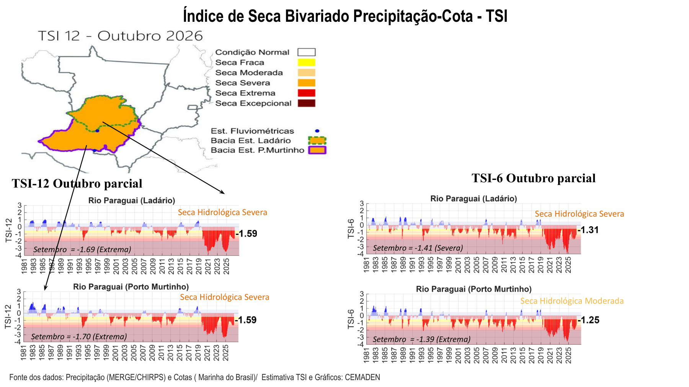

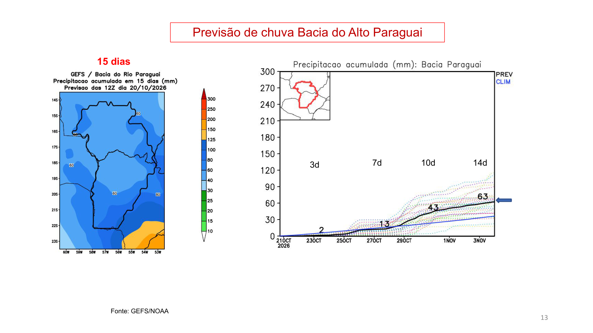

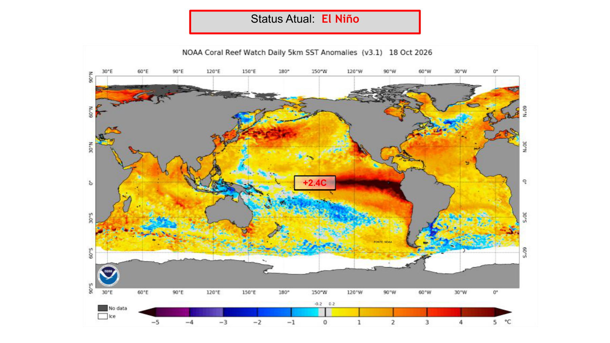

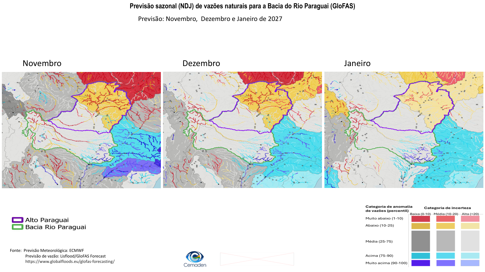
SGB — cotas, percentis e cenários de Ladário
O SGB apresenta quadro de cotas e comparação com intervalos sazonais de normalidade, definidos entre os percentis de permanência 10% e 90% para a época do ano. A leitura deve distinguir o valor observado, sua posição histórica e a tendência de curto prazo.
A comparação por estação indica resposta espacialmente diferenciada. A análise de Ladário em horizonte de 180 dias contém cenários com grande dispersão, que não devem ser reduzidos a uma única trajetória determinística.
Recomenda-se manter vigilância das estações de referência e confrontar a previsão de longo prazo com observações semanais, especialmente para a navegação e o acompanhamento do pulso hidrológico pantaneiro.
Evidências gráficas da instituição

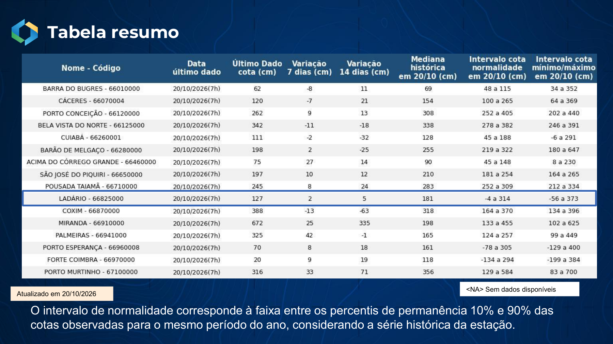

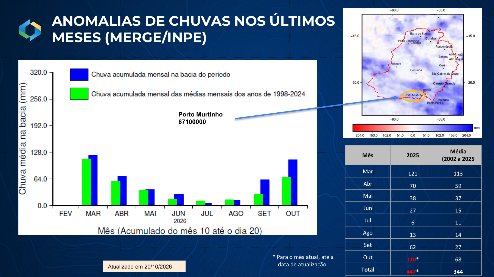

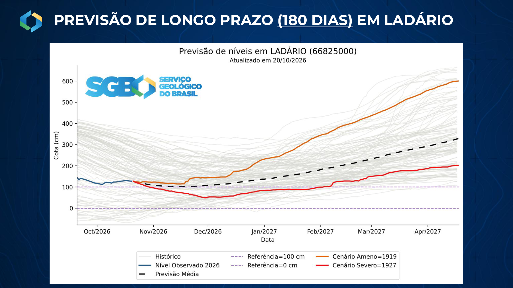
ONS — armazenamento e estratégia operacional de Manso
Em 20/10, a UHE Manso apresentava 71,9% de volume útil, afluência de cerca de 46 m³/s e defluência de 96 m³/s. O material registra a importância de Manso como principal reservatório de regularização da bacia, embora a participação energética da bacia no subsistema SE/CO seja pequena.
Na simulação de 21/10 a 30/11, com afluência média de 63 m³/s e defluência de 95 m³/s, o volume útil final estimado é 65,4%. A apresentação informa defluência mínima de 80 m³/s conforme FSARH 5645/2024, cuja aplicação depende das condições e restrições pertinentes.
Estratégia técnica recomendada, não deliberação da reunião: comparar cenários de 95 m³/s, 80 m³/s e operação adaptativa variável, quantificando benefícios de armazenamento e impactos a jusante. A diferença teórica de 15 m³/s ao longo de 41 dias corresponde a aproximadamente 53,1 hm³, ou 1,8 ponto percentual dos 2.951 hm³ de volume útil nominal. O cálculo não substitui simulação operacional do ONS.
Evidências gráficas da instituição

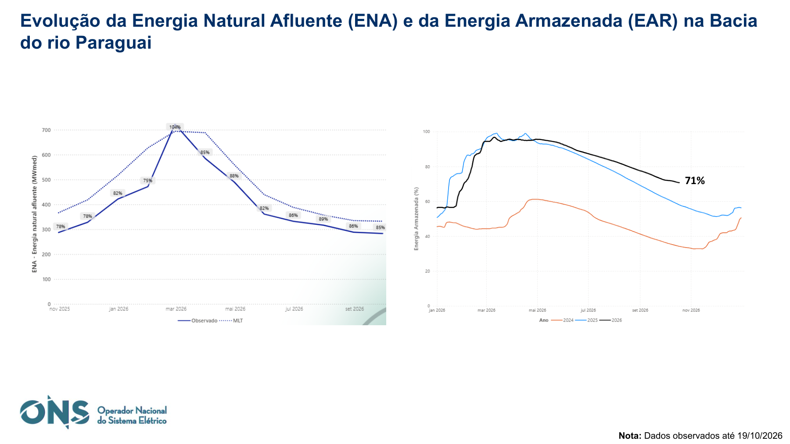

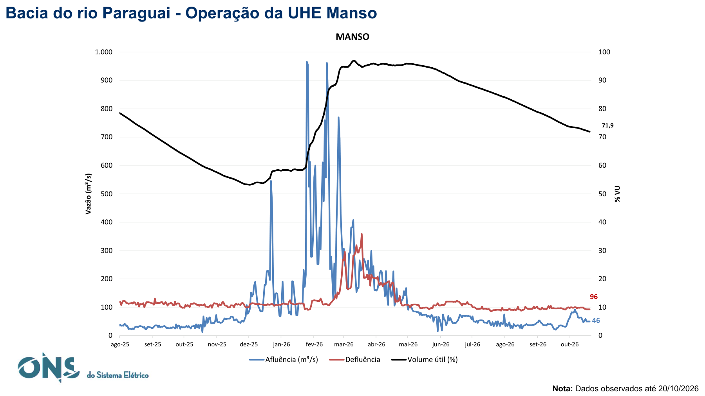

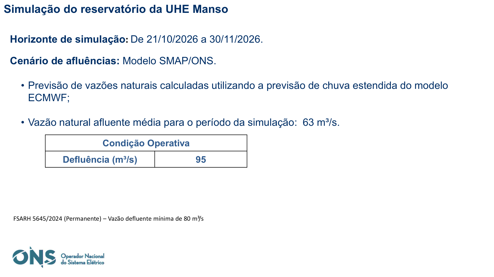

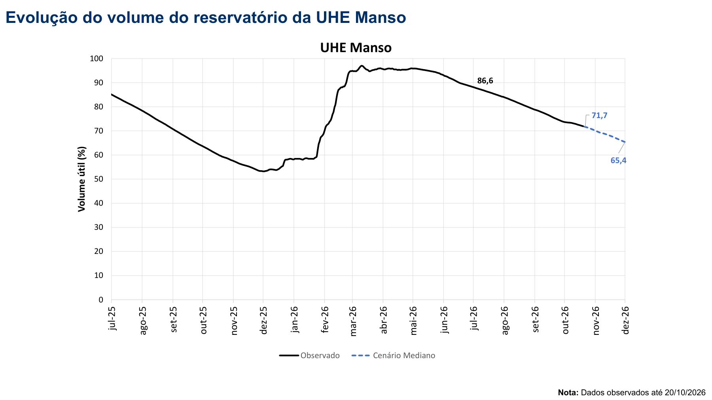
Estratégia para Manso: comparar cenários, preservar os usos a jusante
A proposta analítica registrada na NT é comparar a operação com defluência de 95 m³/s, a alternativa de 80 m³/s e uma trajetória variável. Não há registro recebido de aprovação, pela reunião, de uma redução de defluência.
| Cenário | Informação disponível | Condição de interpretação |
|---|---|---|
| 95 m³/s | Cenário apresentado pelo ONS; afluência média de 63 m³/s e volume final de 65,4% até 30/11. | Resultado condicional às premissas do modelo e à operação simulada. |
| 80 m³/s | Alternativa sugerida para comparação; mínimo informado na apresentação com referência à FSARH 5645/2024. | Não há volume final simulado fornecido para esta alternativa. Mínimo informado não significa autorização automática para operar nesse valor. |
| Defluência variável | Alternativa adaptativa para avaliação conforme afluências, previsões e condições a jusante. | Requer simulação, critérios explícitos e verificação das restrições pertinentes. |
Ordem de grandeza do armazenamento preservado
ΔV = 53,136 hm³ ≈ 1,80 ponto percentual de 2.951 hm³
Estimativa incremental simplificada, adotando 41 dias e mantendo os demais termos iguais. Não representa uma previsão de volume final, não reproduz a simulação do ONS e não quantifica efeitos hidráulicos a jusante.
Cruzamentos técnicos e consequências operacionais
Convergência: CEMADEN e INMET/INPE identificam retomada parcial da precipitação; SGB e CEMADEN demonstram que o comportamento das cotas e os indicadores de seca respondem com defasagem.
Tensão operacional: afluência projetada em Manso (63 m³/s) inferior à defluência simulada (95 m³/s) implica consumo de armazenamento. A avaliação de redução de defluência requer explicitação dos impactos a jusante e das condições da FSARH.
Incerteza: previsões subsazonais e sazonais e a dispersão da previsão de 180 dias de Ladário exigem revisões periódicas; não justificam inferências determinísticas de cheia ou normalização hidrológica.
| Cruzamento | Consequência para a interpretação |
|---|---|
| INMET/INPE × CEMADEN | Retomada pluviométrica e TSI de longo período podem coexistir; chuva recente não apaga a memória hidrológica acumulada. |
| SGB × CEMADEN | Comparar estação, data e indicador. Os registros de 20/10 e 21/10 não são observações simultâneas; índices de seca não são percentis de cota. |
| Previsões meteorológicas × ONS | Chuva prevista sobre a bacia ampla não equivale à afluência específica de Manso. O cenário de operação continua consumindo estoque nas premissas apresentadas. |
| Horizonte de 180 dias × operação corrente | A amplitude de cenários de Ladário orienta vigilância e atualização; não define uma vazão diária de operação do reservatório. |
Quadro de acompanhamento e encaminhamentos técnicos
| Referência institucional | Acompanhamento proposto na NT | Status |
|---|---|---|
| SGB/ANA | Atualizar semanalmente cotas, percentis e tendências em Ladário, Porto Murtinho e estações-chave. | Recomendação de acompanhamento; não deliberação formal registrada. |
| CEMADEN/INMET | Atualizar IIS, TSI, chuva acumulada e projeções de 1–4 semanas, com atenção aos territórios e atividades expostos. | Recomendação de acompanhamento; não deliberação formal registrada. |
| ONS | Caso demandado, apresentar simulações alternativas de defluência em Manso (95, 80 e variável), com volumes finais e repercussões a jusante. | Recomendação de acompanhamento; não deliberação formal registrada. |
| SOE | Registrar eventuais encaminhamentos formais apenas quando documentados em ata ou confirmação dos participantes. | Recomendação de acompanhamento; não deliberação formal registrada. |
Registro da reunião
Informação recebida após o encerramento: reunião concluída sem ressalvas. Não foram fornecidos registros específicos de deliberações, manifestações ou alterações operacionais. Assim, nenhuma recomendação deste documento é atribuída como decisão formal dos participantes.
Fontes e apresentações integrais
Os gráficos foram reproduzidos das apresentações da reunião de 21/10/2026. As quatro cópias abaixo foram verificadas por SHA-256 em relação aos arquivos usados na consolidação técnica. Os cortes de observação e previsão permanecem os de cada instituição.
- INMET/INPE — 13 páginas. Abrir apresentação integral · Página oficial da ANA
- CEMADEN — 24 páginas. Abrir apresentação integral · Página oficial da ANA
- SGB — 13 páginas. Abrir apresentação integral · Página oficial da ANA
- ONS — 20 páginas. Abrir apresentação integral · Página oficial da ANA
Baixar PDF integral desta edição web · Consultar manifesto das fontes e da publicação
Edição web 2.0: substitui a síntese reduzida por uma publicação completa das quatro verticais e das figuras selecionadas. Fontes e anexos permanecem ao final; não antecedem o conteúdo técnico.